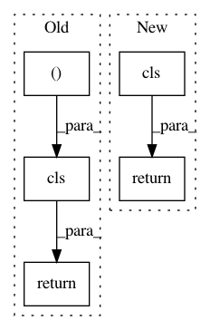

d56c31197dc9a705b7a72d86114d8d5115463349,pytext/metric_reporters/compositional_metric_reporter.py,CompositionalMetricReporter,from_config,#Any#Any#Any#,51
Before Change
@classmethod
def from_config(cls, config, metadata: CommonMetadata):
actions_vocab = metadata.actions_vocab.itos
return cls(
actions_vocab,
[
ConsoleChannel(),
CompositionalFileChannel((Stage.TEST,), config.output_path),
],
)
def gen_extra_context(self):
// check if all_preds contains top K results or only 1 result
pred_target_trees = []
After Change
class CompositionalFileChannel(FileChannel):
def get_title(self):
return ("doc_index", "text", "predicted_annotation", "actual_annotation")
def gen_content(self, metrics, loss, preds, targets, scores, context):
for index, utterance, (pred_tree, target_tree) in zip(
In pattern: SUPERPATTERN
Frequency: 3
Non-data size: 5
Instances
Project Name: facebookresearch/pytext
Commit Name: d56c31197dc9a705b7a72d86114d8d5115463349
Time: 2019-06-14
Author: egaudet@fb.com
File Name: pytext/metric_reporters/compositional_metric_reporter.py
Class Name: CompositionalMetricReporter
Method Name: from_config
Project Name: bokeh/bokeh
Commit Name: d2ce1971e4b984c7d30728b2378f7c959a3efd06
Time: 2016-10-11
Author: mattpap@gmail.com
File Name: bokeh/models/formatters.py
Class Name: FuncTickFormatter
Method Name: from_coffeescript
Project Name: nltk/nltk
Commit Name: 128503a24b95a76ca6afaa55f12c95d755e0a90c
Time: 2019-08-03
Author: pombredanne@nexb.com
File Name: nltk/tag/sequential.py
Class Name: RegexpTagger
Method Name: decode_json_obj